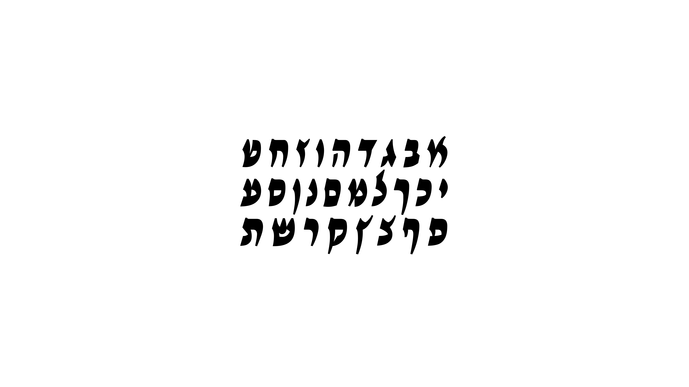
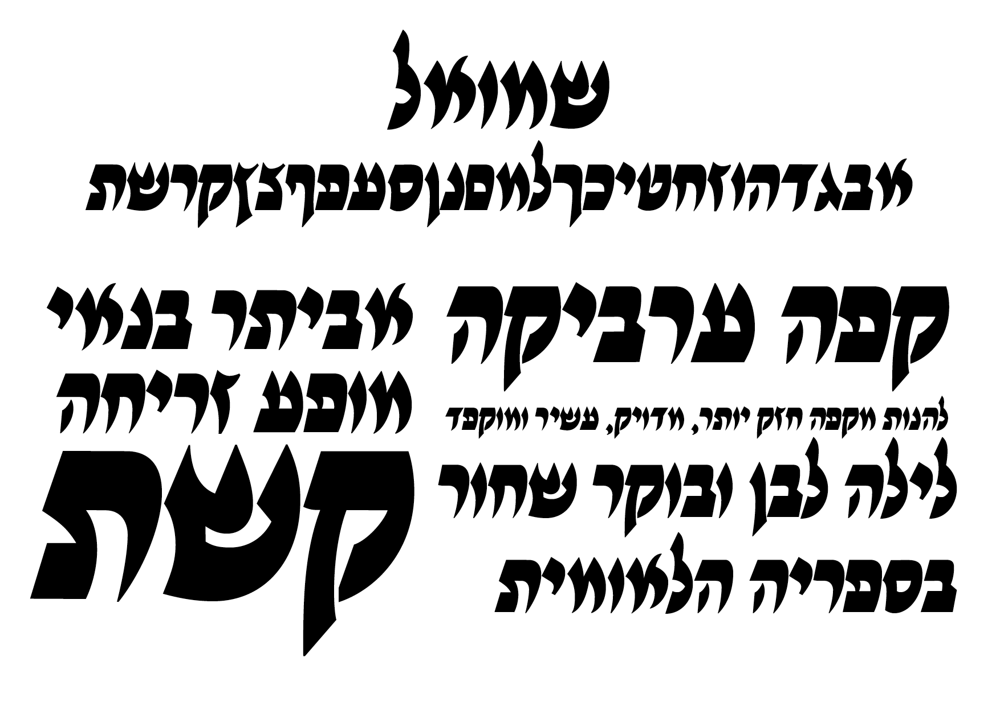

הכתב הבינוני
בסוף שנה א׳ ללימודיי במחלקה, נתקלתי בשלושת הכרכים של ״אסופות כתבים עבריים מימי־הביניים״ — מחקרם יוצא מין הכלל של פרופ׳ מלאכי בית־אריה ז״ל וד״ר עדנה אנג׳ל, הממפה את הכתיבה העברית לאורך ימי הביניים. במבט על הכתבים הללו נגלה לי אוצר צורני עשיר המהווה פתח לעולם טיפוגרפי ועיצובי שלא הכרתי עד אותו רגע.
בין היתר, המחקר מצביע על שיטת כתיבה בעברית, שבמבט ראשון כלל לא נראתה כמו עברית — צורותיה נדמו לעיתים ללטינית ולעיתים נראו כמו הקליגרפיה הערבית. הזרות הצורנית הזו, החורגת מהצורה שבה אנו רגילים לראות עברית כיום, היא שמשכה אותי לחקור את הכתבים הללו לעומק.
כשהגעתי לפרוייקט הגמר היה לי ברור שחומר הגלם שלי הוא הכתב הבינוני. המטרה לא הייתה ליצור שחזור מדויק של הכתבים, אלא לקחת השראה וליצור דיאלוג מול הרפרנס ההיסטורי. בשבועות הראשונים של תחילת העבודה על פרוייקט הגמר הוחלט על בריף:
יצירת פונט עדכני, עכשווי, שימושי ונחשק, בהשראת הכתיבה הבינונית בימי הביניים — ואתר שיציג אותו.
תחילת התהליך כלל בחירה של 18 כתבי יד, פישוט של הצורות, יצירת עקביות וקבלת החלטות ופרשנות עיצובית בת־ימנו. כל זאת במטרה לחפש מועמד ליצירת הפונט.
הכתב הבינוני אינו קטגוריה מוחלטת — הוא מיקום על רצף. בקצה אחד מצוי הכתב המרובע: פורמלי, קשיח, עשיר במשיכות קולמוס. בקצה השני, הכתב הרהוט: מהיר, זורם, ופחות פורמלי. הכתב הבינוני נולד בנקודת הביניים: הוא ירש מן הכתב המרובע את הגגות הישרים, ומן הכתב הרהוט את הבסיסים המעוגלים. כך נוצר כלי כתיבה שאפשר מהירות מבלי להקריב קריאות — ולכן שימש לרוב כתבי היד של ימי הביניים.
הצורות מהמקורות לא היו מקריות, הן היו תוצר של אבולוציית השפה, שנולדה ממאפיינים שונים של זמן, מקום וכלכלה. כדי להבין יותר לעומק איזה בחירות סגנוניות כדאי לעשות, ושהן ישבו על מודל היסטורי של שיטת הכתיבה, חזרתי למחקר. ניסיתי להבין קצת יותר על היסטוריה של האות העברית ולמה דברים נראים כמו שהם נראים.
אז רק רגע,מה זה בכלל
כתב בינוני?
במחקרם, מזהים בית־אריה ואנגל שלוש שיטות כתיבה עיקריות במסורת העברית. שני קצות הסקאלה מוכרים היטב לכל קורא: בקצה האחד ניצב הכתב המרובע והרשמי (המוכר לנו היום כ״כתב דפוס״), ובקצה השני הכתב הרהוט והמהיר (המוכר כ״כתב יד״). אולם מתברר שבימי הביניים שיטת הכתיבה הדומיננטית ביותר הייתה דווקא זו שמוקמה באמצע הרצף הטיפוגרפי — הכתב הבינוני.
נשווה בין הגגות והבסיסים של סגנונות הכתב השונים:


בחינת המאפיינים הצורניים של האותיות מגלה כי הכתב הבינוני הוא הלחם צורני בין יציבות לתנועה: הוא שואל מן הכתב המרובע את הגגות הישרים המייצרים שורת קריאה ברורה, ומאמץ מן הכתב הרהוט את הבסיסים המעוגלים, המאפשרים לצורה לזרום בטבעיות ויוצרים נטייה קלה של האות.
הולדתה של שיטת ביניים זו נבעה מצורך פונקציונלי וכלכלי. הכתב המרובע, שיועד כמעט בלעדית לטקסטים מקודשים (כגון ספרי תורה ותנ״ך), היה כפוף לחוקי הלכה נוקשים שחייבו שרטוט איטי, קפדני ומרובה משיכות קולמוס, כתיבה שגזלה שטח קלף נרחב וזמן עבודה יקר. בקצה הנגדי, הכתב הרהוט שימש ככלי מהיר וחסכוני למכתבים ולטיוטות. הכתב הבינוני נכנס בדיוק לתווך הזה: הוא שימש לכתיבת מסמכים רשמיים, ספרי מדע, והיווה אמצעי היררכי־חזותי להבדיל את הפירושים (כמו פירוש רש״י) מן הטקסט המקראי שעטף. כך אִפשר הכתב הבינוני חיסכון ניכר בזמן ובחומרי גלם, מבלי לוותר על קריאות ועל הדר אסתטי. הוא היווה את רוב כתבי היד של התקופה:
״בחישוב כולל נמצא שבין שנת 1001 (שנת הפצעתו של הכתב הבינוני והתפשטותו במזרח) ובין שנת 1500 קרוב ל־¼ מכתבי־היד נכתבו בכתב מרובע וכמעט ¾ מכל כתבי־היד נכתבו בכתב בינוני, אך רק 4% מהם נכתבו בכתב רהוט.״
מלאכי בית־אריה, קודיקולוגיה עברית: שימור ושינוי
מתוך המחקר אנו למדים כי הכתב הבינוני לא היה סגנון כתיבה נישתי ונסתר — זו הייתה הדרך שבה אנשים כתבו בעברית במשך למעלה מ־500 שנה. לכן, המקורות הקיימים לסגנון זה רבים ומגוונים. מחקרם של בית־אריה ואנג׳ל ביקש לעשות בהם סדר, להשוות ביניהם ולהבין את נקודות הדמיון והשוני. בחלק הבא אנסה להביא את עיקרי הדברים.
המבטאים של הכתב הבינוניהשוואה אזורית
בדומה להתפתחות של מבטאים בשפה, גם הכתב הבינוני פיתח ״מבטאים חזותיים״. כלי הכתיבה (קנה נוקשה לעומת נוצה גמישה לדוגמה) וההשפעות הטיפוגרפיות מהסביבה התרבותית והגיאוגרפית, הולידו סגנונות אזוריים מובחנים.

הטיפוס הספרדי
ספרד, איטליה, צפון אפריקה ופרובנס

הטיפוס האשכנזי
גרמניה, צרפת, אנגליה

הטיפוס המזרחי
המזרח התיכון: ארץ ישראל, איראן, מצרים ולבנון

הטיפוס התימני
תימן
העושר הוויזואלי שניבט מכתבי היד הללו — על ריבוי ״מבטאיו״, הכלים שיצרו אותו וההיגיון המבני שעליו הושתת — לא נותר עבורי בגדר מחקר היסטורי בלבד. הוא הפך לנקודת מוצא למסע עיצובי עכשווי: ניסיון לזקק את רוח הכתב הבינוני ולתרגם את חוקיותו הקליגרפית למערכת וקטורית מודרנית ומתפקדת, המנהלת דיאלוג חי עם העבר.
מחקר מקורות
תהליך הפיתוח החל במחקר צורני מקיף של 18 מקורות היסטוריים נבחרים של הכתב הבינוני. המקורות נדלו מתקופות שונות וממרחבים גאוגרפיים מגוונים (אשכנז, ספרד, תפוצות המזרח ותימן), במטרה למפות את ה־DNA החזותי של האות. השאיפה הייתה לאתר את קווי הדמיון המבניים המשותפים לכלל הסגנונות, ולצידם להבין את המאפיינים האנטומיים הייחודיים שכל מסורת כתיבה סיגלה לעצמה.
על מנת לבחון את ההיתכנות הטיפוגרפית של המקורות ולחקור כיצד תנועת הקולמוס הידנית והחופשית שורדת את המעבר לסביבה הדיגיטלית, יצרתי עבור כל אחד מכתבי היד ״מיני־פונט״ וקטורי ייעודי.
מכל כתב יד נלקחו כמה אותיות, הוכנסו כפונט בניסיון לראות איך הצורות מתפקדות במילים ומשפטים.
בתהליך החיפוש הזה בדקתי חללים פנימיים, מקצב ובסיס טוב שיכול להיראות כמו התחלה של פונט.
מסקנת הביניים מתהליך דיגיטציה נסיוני זה הייתה: אי אפשר, וגם לא נכון טיפוגרפית, להעתיק אף אות צורנית בשלמותה מכתב היד ההיסטורי. המעבר ממדיום למדיום דורש הפשטה ותרגום. התהליך חייב לעבור דרך ציור ידני וליטושים. המקום של ההקשר הצורני יכול להתרחק מהמקור, מתוך תפיסה שקודם כל צריך שהפונט יהיה קריא היום, יפה, אסתטי ועקבי.
משלב זה, ההתבוננות במקורות ההיסטוריים הפסיקה להיות חקר בלבד והפכה לניתוח אנטומי עמוק: פירוק האותיות לחלקי יסוד ודליית מרכיבים ספציפיים לשילוב במערכת הטיפוגרפית המתהווה.
מכל מקור, או מכל עיבוד עכשווי שעשיתי לאותיות, נלקחה השראה לפונט ״שמואל״ —

בגריד ההשראות מומחש תהליך הזיקוק: ניתן לראות כיצד פרט בודד מכתב־יד אחד — לדוגמת צורת אותיות מסוימות, זווית הכניסה של הקולמוס או עיקול הבסיס — תורגם להחלטה עיצובית בפונט הסופי. לעיתים נאספו פתרונות צורניים מאותיות זהות במספר מקורות שונים לכדי ״צורת־על״ אחת (כפי שנעשה, למשל, בעיצוב האותיות א׳, ל׳, מ׳ ו־ש׳), ולעיתים אות בודדת מכתב־יד ספציפי היוותה את ההשראה הדומיננטית ואת השלד שעליו נבנתה האות החדשה.
איסוף הצורניות השונה והרכבתם מחדש היוו את האתגר המרכזי בשלב הפיתוח. העבודה כללה חיבור של כלל ההשראות לכדי מערכת צורנית אחת, מהודקת וקוהרנטית, השומרת על מקצב אחיד וזורם. השאיפה הייתה לעצב גופן שאינו נראה כאוסף אקלקטי של ציטוטים מהעבר, אלא יצירה עכשווית בעלת הגיון פנימי עצמאי הנשענת על שורשים עמוקים. מתוך כור ההיתוך של החוקים, המקצבים וההשראות, נולד הגופן ״שמואל״.
הגירסה הראשונה של הפונט:

התהליך של התבוננות במקורות, ציור מחדש של אותיות ובדיקתן במערכת המשיכה להיות פרקטיקה קבועה בכל תהליך העבודה על הפונט. גם בשלבי עבודה וסקיצות מאוחרות עדיין חזרתי לצילומי הסריקות והדיגיטציות הראשונות.
סקיצות
תהליך הפיתוח התבסס על ניסיונות כתיבה בכלים וציפורנים שונות כדי ללמוד את התנועה הקליגרפית המקורית. לאחר העיצוב הווקטורי מתוך המקורות, בוצעו תיקונים וסקיצות ידניות באייפד; אלו נועדו להגיע לדיוק מרבי ולייצר איזון מדויק יותר בין השחור (הדיו) ללבן (החלל הפנימי) של הפונט. לאורך כל התהליך נערכה התבוננות רציפה בסריקות המקוריות, ובוצעו שינויים קטנים שנבעו מתוך ניסיון להבין לעומק את הלוגיקה שמאחורי הצורות והסיבות למראה שלהן.
בשל כך, האותיות לא הועתקו אלא תורגמו. כל גליף נבחן מול שתי שאלות: מה הייתה תנועת הכלי המקורית, ומה דורשת המערכת הטיפוגרפית של הפונט כיום. במקרים שבהם נוצר מתח בין השתיים, ההחלטה הוכרעה לטובת הלוגיקה המערכתית, תוך ניסיון להיצמד למקור ככל האפשר, כדי להבטיח שהפונט יתפקד ככלי עיצובי עקבי, שימושי ורלוונטי.
כל אות נבחנה בהקשר של טקסט חי. הבדיקה בגדלים שונים חשפה בעיות שניתוח של אות בודדת לא יכול לגלות, כמו הריתמוס בין אותיות ישרות לעגולות – אתגר משמעותי במבנה הצפוף המאפיין את הכתב הבינוני. המדד המרכזי לא היה יופי של אות בודדת, אלא עקביות המערכת כולה: עובי הקו בנקודות מגע, זווית הסריפים והיחס המדויק שבין גובה האות (x־height) לגוף שלה.
ציר הווריאציה (300–900) הציב אתגר מורכב, שכן הכתב המקורי מתאפיין בדחיסות גבוהה ויוצר ״צבע״ שחור וצפוף מאוד על הדף. בניגוד לתהליכי עיצוב מודרניים שמתחילים לרוב ממשקל ממוצע, כאן נקודת המוצא הייתה הכתב העמוס והכהה. האתגר היה לפענח את הלוגיקה של התנועה הקליגרפית המקורית ולתרגם אותה למערכת וריאבילית, כך שהאופי הייחודי יישמר גם כשמפשיטים מהאות את ה״בשר״ שלה לכדי משקלים קלים. המטרה הייתה למצוא את האיזון המדויק שבין השחור ללבן, תוך שמירה על המתח הצורני הפנימי של הכתב בכל נקודה על הציר.
דו־לשוני
תוכן בהמשך.
מאפיינים
שמואל הוא פונט לתצוגה ולכותרות, המיועד לייצר נוכחות ויזואלית חזקה ולא נועד לקריאה של גוף טקסט ארוך. האנטומיה שלו מזקקת את העקרונות המגדירים את הכתב הבינוני: גגות ישרים, בסיסים מעוגלים וחללים פנימיים מצומצמים ועקביים המייצרים ריתמוס צפוף ומובהק.
ציר הווריאציה של הפונט (משקל 500–900) מאפשר שליטה מלאה בעובי האות, תוך שמירה על ה״שלד״ המשותף לסגנון. העיצוב אינו מחקה מסמך היסטורי ספציפי, אלא מייצג מערכת המבוססת על עובי קו מדוד וסריפים בעלי מקור קליגרפי ברור, שאינם מסוגננים באופן מלאכותי אלא נובעים מהלוגיקה של תנועת הקולמוס.
מעבר לצד הטכני, ״שמואל״ הוא ניסיון מחקרי לבדוק האם כתב שנעלם כמעט לחלוטין לפני כחמש מאות שנה יכול להפוך לכלי עבודה פונקציונלי ורלוונטי ב־2026. הפרויקט מציע נקודת אמצע מוגדרת: מחויבות מלאה לעקרונות האנטומיים והקליגרפיים של המקור, לצד חופש עיצובי מכוון בפרטים הקטנים כדי להבטיח את שימושיותו במרחב העיצובי והדיגיטלי העכשווי.